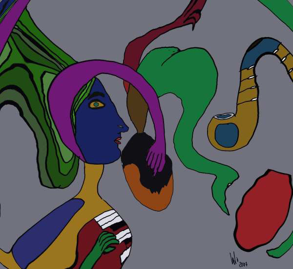

Maria Cristina Melo
Composition
 |
| (1 of 10) |
 |
| (1 of 10) |
Maria Cristina Melo writes, "All the work I am showing here is related to my daily life. I start my digital drawing after going out for a walk with my camera and choosing to 'click' a particular moment. That moment will be tremendous for me, because right away, before I digitalize it, I am already working on it subjectively. I know exactly what I want to achieve and that is, in fact, what I do afterwards."After having a collection of pictures registered in my camera and in my mind, I transfer them into my Mac and that's the crucial time when I start to transform the actual moment I picked with a simple click, into a work of art. It is here where I find that drawing on a computer gives me an enormous advantage. It is fast, surprisingly manipulative, objectively permutable, subjectively structured. I can play around by using 'Layers' and a chemistry of colors and effects, until I am satisfied with the new piece of art I created. I mainly use Corel Painter and, although I'm using it for some years now, I still have a long way to go. I am a self-taught artist and thanks to computers, I am capable of connecting to a vast number of other artists who inspire, help and inter communicate with me in a matter of seconds.
"Again, thanks to the computer, I am able to carry out my work to another continent and to another 'window' just by clicking on a certain button. My mind is still faster than a computer but the computer can project me faster than my mind."